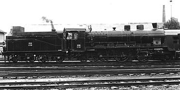

JDŽ/JŽ serija 05 je univerzalna brzovozna parna lokomotiva Parna lokomotiva je železnička lokomotiva koja za svoj pogon koristi snagu iz parne mašine... sa pregrejanom parom za vuču ekspresnih, brzih i putničkih vozova na ravničarskim deonicama magistralnih pruga. Bilo je ukupno 40 lokomotiva ove serije u eksploataciji u Jugoslovenskim železnicama Železnice Srbije je akcionarsko društvo kome je glavna delatnost obavljanje prometa roba i putnika na prugama, vuča vozova i održavanje vučnih jedinica, održavanje pruge i tehnički nadzor, u Srbiji... od 1930. do 1972. godine, a proizvedene su u nemačkoj fabrici lokomotiva „Švarckopf“ u Berlinu. Građene su uporedo s lokomotivama serije 06 i 30. Lokomotiva serije 05 pokazala se veoma dobra u saobraćaju i važila je za jednu od najbržih parnih lokomotiva na prugama JDŽ. Postala je čuvena po tome što je vukla najslavniji voz u istoriji svetskih železnica Simplon orijent.
Posle Prvog svetskog rata novoformirana država nasledila je veoma različit železnički vozni park. Pošto je veći deo zemlje imao oštećenu ili slabo razvijenu saobraćajnu infrastrukturu planirana je sveobuhvatna obnova i proširenje železničke mreže. U tom smislu, za zamenu starih austrijskih i srpskih lokomotiva Uprava SHS državne železnice donela je plan koji je podrazumevao veliku nabavku novih parnih lokomotiva različite specifikacije. Još pre rata Uprava SDŽ imala je poslovne veze sa vodećom berlinskom fabrikom lokomotiva, koje su krunisane razvojem i nastankom serija SDŽ 121  JDŽ/JŽ serija 01 je parna lokomotiva sa pregrejanom parom za vuču brzih i putničkih vozova. Nalazila se u eksploataciji u srpskim i jugoslovenskim železnicama od 1912. do 1985. godine, a proizvođena je u nemačkim fabrikama „Švarckopf” Berlin i „Mašinefabrik” Karlsrue, od 1912. do 1923. godine. Ove lokomotive su imale popularan naziv Hiljadarka. i 151. Početkom 1920-ih, od istog proizvođača je na ime ratne reparacije naručeno 120 lokomotiva serije 121, kasnije prenumerisane u 01.
Vodeći inžinjeri Mašinskog odeljenja državne železnice SHS postavili su glavne uslove u projektovanju tri nove univerzalne lokomotive po ugledu na novi nemački sistem standarda parnih lokomotiva iz 1925. godine (Einheitsdampflokomotive), što pored istog kotla podrazumeva i što veću unifikaciju delova kod različitih lokomotiva kako bi smanjilo njihove troškove eksploatacije. Stručnjaci državne železnice SHS koji su odredili glavne karakteristike, konstruisanje lokomotiva su poverile berlinskom Švarckopfu (nem. Schwartzkopf). S obzirom na to da su u isto vreme, pored serije 05, naručene i lokomotive serije 06 i 30, zahtevalo se da lokomotive sve tri nove serije imaju što više zajedničkih međusobno zamenjivih delova.
Direkcija JDŽ potpisala je ugovor 1929. godine sa berlinskim fabrikama lokomotiva Borsig i Švarckopf o kupovini tri serije parnih lokomotiva u 110 primeraka, koje bi trebale da budu izgrađene po uzoru na univerzalni standard:
▪ A 2'C1 „za vuču brzih putničkih vozova“ (05 serija)
▪ A 1'D1 „za vuču teških putničkih i brzih vozova“ (serija 06)
▪ 1'E „za vuču teških teretnih vozova“ (serija 30)
Sve tri serije lokomotiva imale su velik broj istih delova. Iako su obe fabrike, Borsig i Švarckopf, formirale zajedničku radnu grupu za izradu projekta, one su podelile posao kod serijske proizvodnje. Švarckopf je preuzeo proizvodnju lokomotiva za ekspresni voz (05), a Borsig druge dve serije. Za relativno kratak vremenski period, od 1923. do 1930. godine, Direkcija JDŽ-a nabavila je 230 novih parnih lokomotiva (serije 01, 05, 06 i 30), čime je dugoročno obezbedila stabilnost u železničkom saobraćaju na prugama normalnog koloseka.
JŽ serija 05 predviđena je za vuču teških ekspresnih vozova na ravničarskim prugama odnosno korišćenje u Slavoniji, Sremu i Pomoravlju. Švarckopf je isporučio 1930. godine JDŽ-u 40 lokomotiva sa fabričkim brojem od 9607 do 9646. U početku, nove lokomotive su nosile oznaku SHS 389, da bi 1933. godini bile prenumerisane u JDŽ 05, a 1954. godine u JŽ 05. Od 1930. zbog nabavke brzovoznih lokomotiva JDŽ serije 05 značajno je skraćeno vreme vožnje. Od tada, čisto vreme vožnje vozova O. S. i S. O. ( Simplon orijent ) od Beograda do Niša iznosilo je 3 sata i 34 minuta, u suprotnom smeru 3 sata i 50 minuta, a vreme putovanja iznosilo je 3 sata i 45 minuta. [1.0] Sastav voza je bio devet četvoroosovinskih kola, a masa voza je bila 450 tona. Maksimalna brzina ovih vozova iznosila je 100 km/č. Od 1946. do 1959. godine najbrži vozovi na pruzi Beograd—Niš koji su saobraćali na relaciji Pariz — Atina bili su PA/AP čije je čisto vreme vožnje u smeru ka Nišu iznosilo 4 sata i 6 minuta, u suprotnom smeru 4 sata i 15 minuta, a vreme putovanja 4 sata i 17 minuta. Sastav voza kretao se između osam i 10 četvoroosovinskih kola, a masa voza bila je od 400 do 500 tona. [1.1] Maksimalna brzina bila je 100 km/č, a na raljskom usponu 65 km/č. Vuču ovih vozova i dalje su obavljale parne lokomotive serije 05. Tehničke brzine u smeru Beograd—Niš i u suprotnom smeru iznosile su 59,51 i 57,41 km/č, dok su komercijalne brzine za te smerove iznosile 56,96 i 54,83 km/č.